Ch2. Getting startd with qplot
The source R script available here
Contents
library(ggplot2)
options(show.error.locations = TRUE)
set.seed(1410) # Make the sample reproducible
The Diamonds dataset
dsmall <- diamonds[sample(nrow(diamonds), 100), ]
str(dsmall)
## Classes 'tbl_df', 'tbl' and 'data.frame': 100 obs. of 10 variables:
## $ carat : num 1.35 0.3 0.75 0.26 0.33 1.52 0.32 2.25 0.25 1.02 ...
## $ cut : Ord.factor w/ 5 levels "Fair"<"Good"<..: 5 2 5 5 4 5 5 5 4 4 ...
## $ color : Ord.factor w/ 7 levels "D"<"E"<"F"<"G"<..: 7 4 3 3 5 4 4 6 2 5 ...
## $ clarity: Ord.factor w/ 8 levels "I1"<"SI2"<"SI1"<..: 4 7 2 5 7 7 8 2 6 1 ...
## $ depth : num 61.4 64 59.2 60.9 61.4 62.4 61.3 62.4 62.5 62.5 ...
## $ table : num 57 57 60 57 59 55 54 57 59 60 ...
## $ price : int 5862 678 2248 580 752 15959 918 17143 740 3141 ...
## $ x : num 7.1 4.23 5.87 4.13 4.42 7.3 4.41 8.39 4.04 6.39 ...
## $ y : num 7.13 4.27 5.92 4.11 4.44 7.39 4.47 8.32 4.02 6.41 ...
## $ z : num 4.37 2.72 3.49 2.51 2.72 4.58 2.72 5.21 2.52 4 ...
print(xtable::xtable(head(dsmall,n=10)), type='html')
carat | cut | color | clarity | depth | table | price | x | y | z | |
|---|---|---|---|---|---|---|---|---|---|---|
1 | 1.35 | Ideal | J | VS2 | 61.40 | 57.00 | 5862 | 7.10 | 7.13 | 4.37 |
2 | 0.30 | Good | G | VVS1 | 64.00 | 57.00 | 678 | 4.23 | 4.27 | 2.72 |
3 | 0.75 | Ideal | F | SI2 | 59.20 | 60.00 | 2248 | 5.87 | 5.92 | 3.49 |
4 | 0.26 | Ideal | F | VS1 | 60.90 | 57.00 | 580 | 4.13 | 4.11 | 2.51 |
5 | 0.33 | Premium | H | VVS1 | 61.40 | 59.00 | 752 | 4.42 | 4.44 | 2.72 |
6 | 1.52 | Ideal | G | VVS1 | 62.40 | 55.00 | 15959 | 7.30 | 7.39 | 4.58 |
7 | 0.32 | Ideal | G | IF | 61.30 | 54.00 | 918 | 4.41 | 4.47 | 2.72 |
8 | 2.25 | Ideal | I | SI2 | 62.40 | 57.00 | 17143 | 8.39 | 8.32 | 5.21 |
9 | 0.25 | Premium | E | VVS2 | 62.50 | 59.00 | 740 | 4.04 | 4.02 | 2.52 |
10 | 1.02 | Premium | H | I1 | 62.50 | 60.00 | 3141 | 6.39 | 6.41 | 4.00 |
2.3 Basic use
qplot(carat, price, data = diamonds)
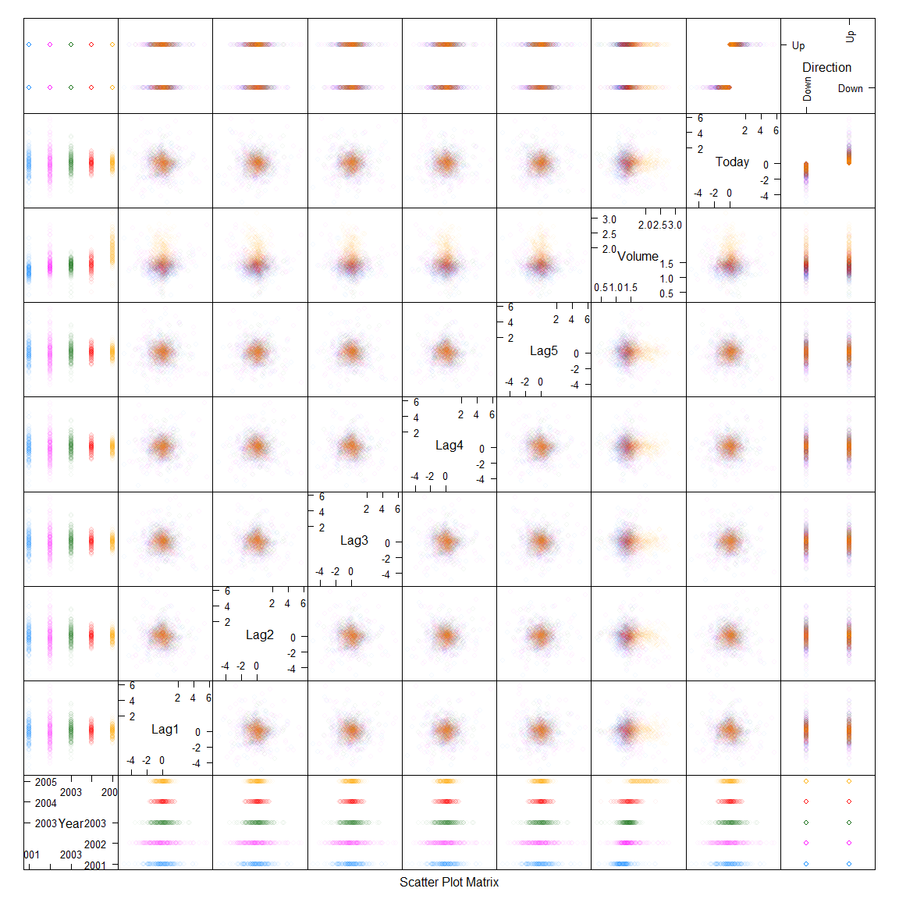
qplot(log(carat), log(price), data = diamonds)
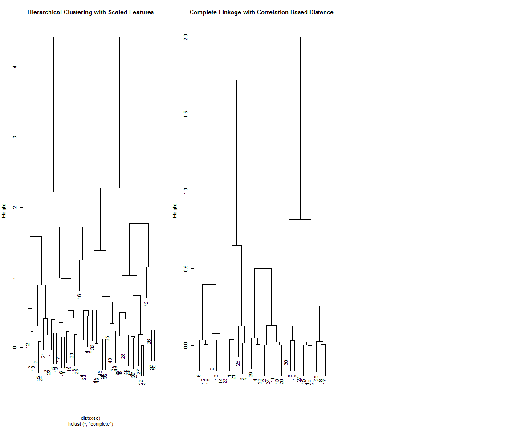
qplot(carat, x * y * z, data = diamonds)
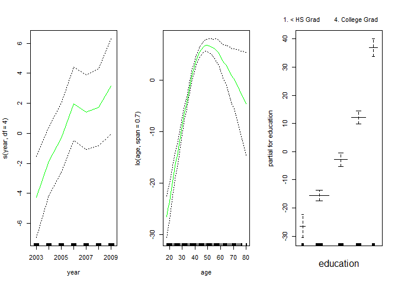
2.4 Color, size, shape, and other aesthetic attributes
# Mapping point colour to diamond colour (left), and point shape to cut
# quality (right).
qplot(carat, price, data = dsmall, colour = color)

qplot(carat, price, data = dsmall, shape = cut)

# Reducing the alpha value from 1/10 (left) to 1/100 (middle) to 1/200
# (right) makes it possible to see where the bulk of the points lie.
qplot(carat, price, data = diamonds, alpha = I(1/10))

qplot(carat, price, data = diamonds, alpha = I(1/100))

qplot(carat, price, data = diamonds, alpha = I(1/200))

2.5 Plot geoms
2.5.1 Add a smoother to plot
# Smooth curves add to scatterplots of carat vs.\ price. The dsmall
# dataset (left) and the full dataset (right).
qplot(carat, price, data = dsmall, geom = c("point", "smooth"))

qplot(carat, price, data = diamonds, geom = c("point", "smooth"))
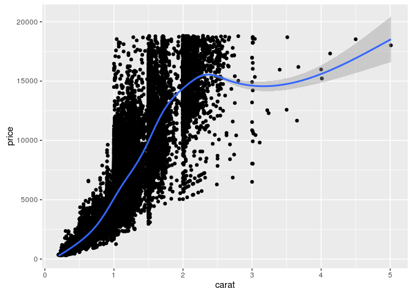
Code below needed some correction (to allow span to work). See:
- https://groups.google.com/forum/#!topic/ggplot2/XkpxtrH09DQ
- http://stackoverflow.com/questions/35102453/r-not-plotting-says-unknown-parameter-method-ggplot2/35103164
# The effect of the span parameter. (Left) \code{span = 0.2}, and
# (right) \code{span = 1}.
qplot(carat, price, data = dsmall, geom = c("point", "smooth")) +
stat_smooth(span = 0.2)

qplot(carat, price, data = dsmall, geom = c("point", "smooth")) +
stat_smooth(span = 1)

# The effect of the formula parameter, using a generalised additive
# model as a smoother. (Left) \code{formula = y ~ s(x)}, the default;
# (right) \code{formula = y ~ s(x, bs = "cs")}.
library(mgcv)
## Loading required package: nlme
## This is mgcv 1.8-14. For overview type 'help("mgcv-package")'.
qplot(carat, price, data = dsmall, geom = c("point", "smooth")) +
geom_smooth(method = "gam", formula = y ~ s(x))

qplot(carat, price, data = dsmall, geom = c("point", "smooth")) +
geom_smooth(method = "gam", formula = y ~ s(x, bs = "cs"))
# The effect of the formula parameter, using a linear model as a
# smoother. (Left) \code{formula = y ~ x}, the default; (right)
# \code{formula = y ~ ns(x, 5)}.
library(splines)
qplot(carat, price, data = dsmall, geom = c("point", "smooth")) +
geom_smooth(method = "lm")
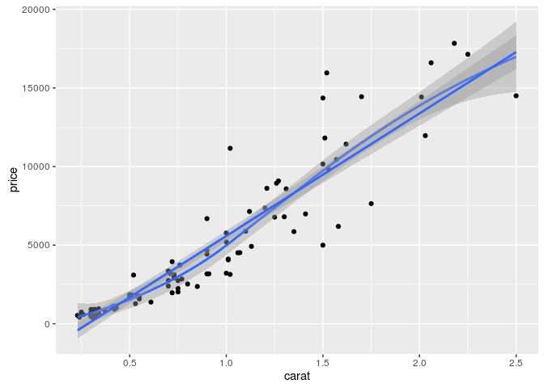
qplot(carat, price, data = dsmall, geom = c("point", "smooth")) +
geom_smooth(method = "lm", formula = y ~ ns(x,5))
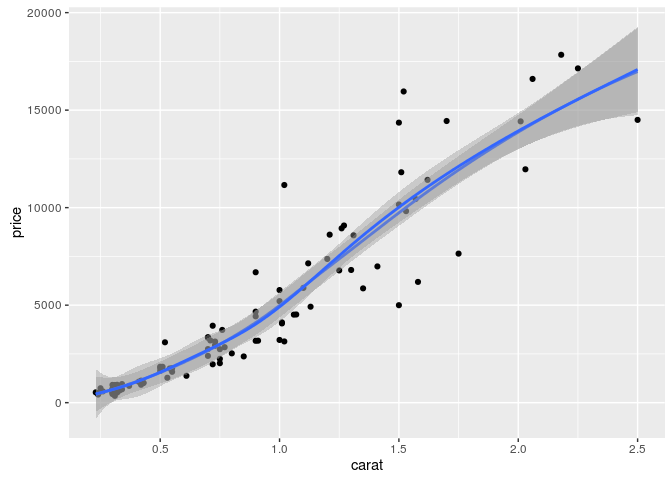
2.5.2 Boxplots and jittered points
# Using jittering (left) and boxplots (right) to investigate the
# distribution of price per carat, conditional on colour. As the
# colour improves (from left to right) the spread of values decreases,
# but there is little change in the centre of the distribution.
qplot(color, price / carat, data = diamonds, geom = "jitter")
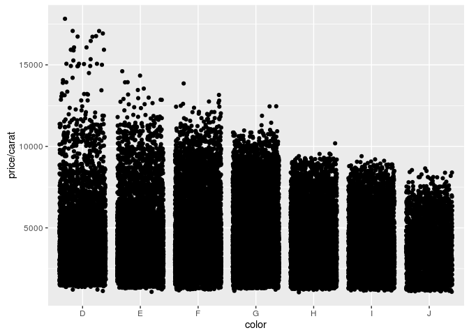
qplot(color, price / carat, data = diamonds, geom = "boxplot")

# Varying the alpha level. From left to right: $1/5$, $1/50$, $1/200$.
# As the opacity decreases we begin to see where the bulk of the data
# lies. However, the boxplot still does much better.
qplot(color, price / carat, data = diamonds, geom = "jitter",
alpha = I(1 / 5))

qplot(color, price / carat, data = diamonds, geom = "jitter",
alpha = I(1 / 50))
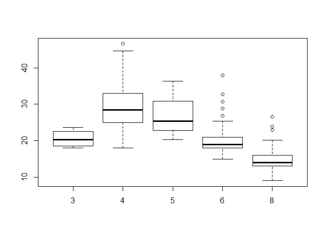
qplot(color, price / carat, data = diamonds, geom = "jitter",
alpha = I(1 / 200))

2.5.3 Histogram and density plots
# Displaying the distribution of diamonds. (Left) \code{geom =
# "histogram"} and (right) \code{geom = "density"}.
qplot(carat, data = diamonds, geom = "histogram")
## `stat_bin()` using `bins = 30`. Pick better value with `binwidth`.
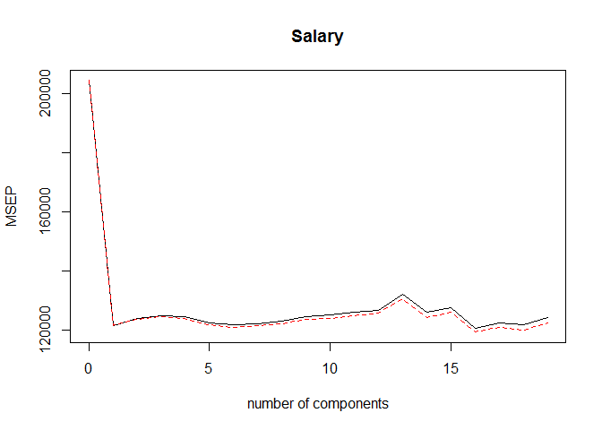
qplot(carat, data = diamonds, geom = "density")
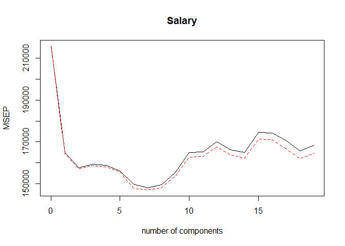
# Varying the bin width on a histogram of carat reveals interesting
# patterns. Binwidths from left to right: 1, 0.1 and 0.01 carats. Only
# diamonds between 0 and 3 carats shown.
qplot(carat, data = diamonds, geom = "histogram", binwidth = 1,
xlim = c(0,3))
## Warning: Removed 32 rows containing non-finite values (stat_bin).

qplot(carat, data = diamonds, geom = "histogram", binwidth = 0.1,
xlim = c(0,3))
## Warning: Removed 32 rows containing non-finite values (stat_bin).
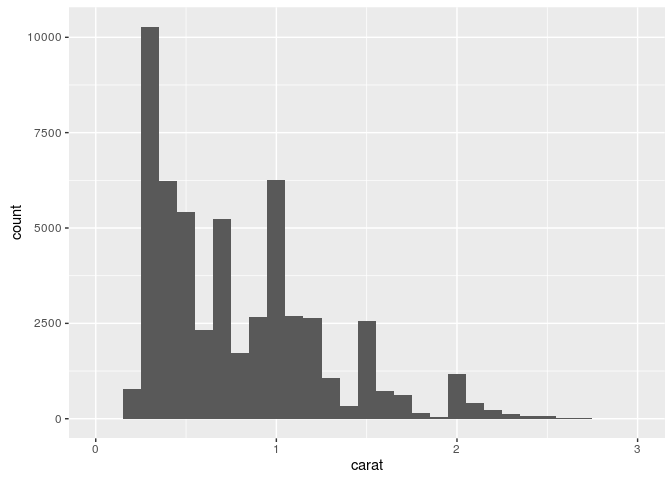
qplot(carat, data = diamonds, geom = "histogram", binwidth = 0.01,
xlim = c(0,3))
## Warning: Removed 32 rows containing non-finite values (stat_bin).
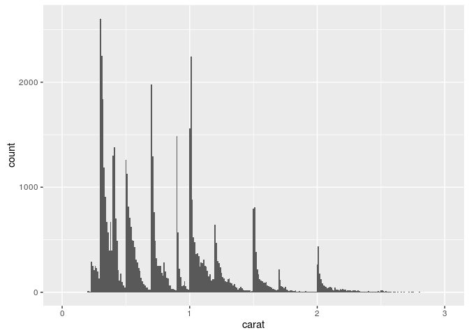
# Mapping a categorical variable to an aesthetic will automatically
# split up the geom by that variable. (Left) Density plots are
# overlaid and (right) histograms are stacked.
qplot(carat, data = diamonds, geom = "density", colour = color)
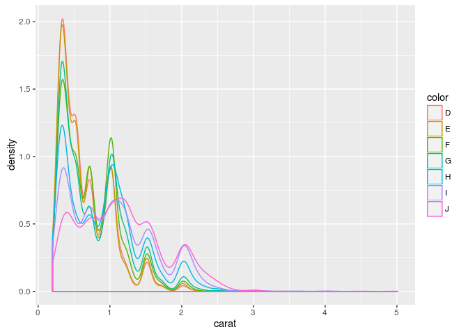
qplot(carat, data = diamonds, geom = "histogram", fill = color)
## `stat_bin()` using `bins = 30`. Pick better value with `binwidth`.
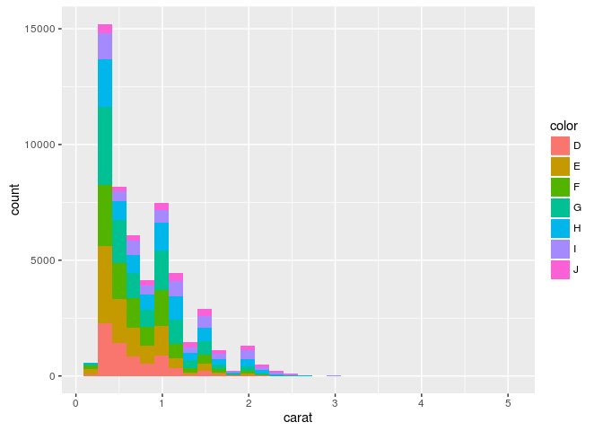
2.5.4 Bar charts
# Bar charts of diamond colour. The left plot shows counts and the
# right plot is weighted by \code{weight = carat} to show the total
# weight of diamonds of each colour.
qplot(color, data = diamonds, geom = "bar")
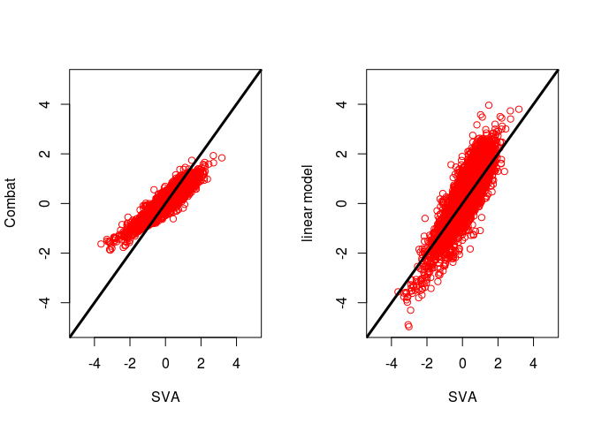
qplot(color, data = diamonds, geom = "bar", weight = carat) +
scale_y_continuous("carat")

2.5.5 Time series with line and path plots
str(economics)
## Classes 'tbl_df', 'tbl' and 'data.frame': 574 obs. of 6 variables:
## $ date : Date, format: "1967-07-01" "1967-08-01" ...
## $ pce : num 507 510 516 513 518 ...
## $ pop : int 198712 198911 199113 199311 199498 199657 199808 199920 200056 200208 ...
## $ psavert : num 12.5 12.5 11.7 12.5 12.5 12.1 11.7 12.2 11.6 12.2 ...
## $ uempmed : num 4.5 4.7 4.6 4.9 4.7 4.8 5.1 4.5 4.1 4.6 ...
## $ unemploy: int 2944 2945 2958 3143 3066 3018 2878 3001 2877 2709 ...
print(xtable::xtable(head(economics,n=10)), type='html')
## Warning in formatC(x = structure(c(-915L, -884L, -853L, -823L, -792L,
## -762L, : class of 'x' was discarded
date | pce | pop | psavert | uempmed | unemploy | |
|---|---|---|---|---|---|---|
1 | -915 | 507.40 | 198712 | 12.50 | 4.50 | 2944 |
2 | -884 | 510.50 | 198911 | 12.50 | 4.70 | 2945 |
3 | -853 | 516.30 | 199113 | 11.70 | 4.60 | 2958 |
4 | -823 | 512.90 | 199311 | 12.50 | 4.90 | 3143 |
5 | -792 | 518.10 | 199498 | 12.50 | 4.70 | 3066 |
6 | -762 | 525.80 | 199657 | 12.10 | 4.80 | 3018 |
7 | -731 | 531.50 | 199808 | 11.70 | 5.10 | 2878 |
8 | -700 | 534.20 | 199920 | 12.20 | 4.50 | 3001 |
9 | -671 | 544.90 | 200056 | 11.60 | 4.10 | 2877 |
10 | -640 | 544.60 | 200208 | 12.20 | 4.60 | 2709 |
# Two time series measuring amount of unemployment. (Left) Percent of
# population that is unemployed and (right) median number of weeks
# unemployed. Plots created with {\tt geom="line"}.
qplot(date, unemploy / pop, data = economics, geom = "line")

qplot(date, uempmed, data = economics, geom = "line")
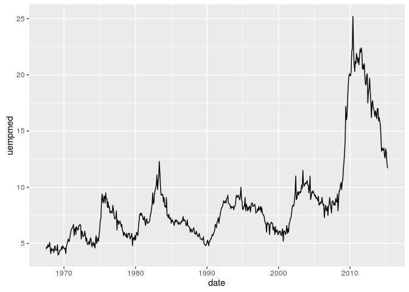
# Path plots illustrating the relationship between percent of people
# unemployed and median length of unemployment. (Left) Scatterplot
# with overlaid path. (Right) Pure path plot coloured by year.
year <- function(x) as.POSIXlt(x)$year + 1900
qplot(unemploy / pop, uempmed, data = economics,
geom = c("point", "path"))

scale_area deprecated; replaced with scale_size
(http://mfcovington.github.io/r_club/errata/2013/03/05/ch5-errata/)
# qplot(unemploy / pop, uempmed, data = economics,
# geom = "path", colour = year(date)) + scale_area()
qplot(unemploy / pop, uempmed, data = economics,
geom = "path", colour = year(date)) + scale_size_area()

2.6 Faceting
# Histograms showing the distribution of carat conditional on colour.
# (Left) Bars show counts and (right) bars show densities (proportions
# of the whole). The density plot makes it easier to compare
# distributions ignoring the relative abundance of diamonds within each
# colour. High-quality diamonds (colour D) are skewed towards small
# sizes, and as quality declines the distribution becomes more flat.
qplot(carat, data = diamonds, facets = color ~ .,
geom = "histogram", binwidth = 0.1, xlim = c(0, 3))
## Warning: Removed 32 rows containing non-finite values (stat_bin).

qplot(carat, ..density.., data = diamonds, facets = color ~ .,
geom = "histogram", binwidth = 0.1, xlim = c(0, 3))
## Warning: Removed 32 rows containing non-finite values (stat_bin).

qplot(
carat, price, data = dsmall,
xlab = "Price ($)", ylab = "Weight (carats)",
main = "Price-weight relationship"
)

qplot(
carat, price/carat, data = dsmall,
ylab = expression(frac(price,carat)),
xlab = "Weight (carats)",
main="Small diamonds",
xlim = c(.2,1)
)
## Warning: Removed 35 rows containing missing values (geom_point).

qplot(carat, price, data = dsmall, log = "xy")